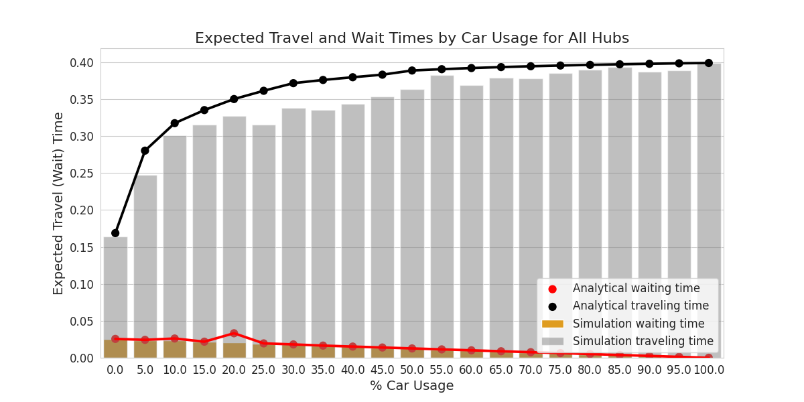

TRIALS, TURBULATIONS, AND INFERENCES OF ML ON COMPLEX DATA: POTATO VARIETIES, SIMULATED CLOUDS, AND MORE
Presentation by Fabiana Ferracina (WSU Vancouver)My Academic Journey
- Magna cum laude B.S. from the University of Rochester. Awarded Highest Distinction in Mathematics. Elected to Phi Beta Kappa.
- M.S. in Mathematics (Optimization focus) from the University of Washington.
- Mathematics and Computer Science Lecturer at the University of Washington Bothell.
- Earned CISER Mike Jacroux Book Award for Best Among PhD Students in Statistics at Washington State University.
My Academic Journey
- Summer 2022 G-RIPS Sendai Internship: worked on transit problems with Toyota and Univ. of Tsukuba.
- 2023-2024 internship at PNNL to work with Mahantesh Halappanavar and Laura Fierce.
- Summer 2023 MRC on Complex Social Systems with Mason Porter $\rightarrow$ Facility-Location TDA project.
- Invited as academic mentor for Summer 2024 G-RIPS Sendai. Offered postdoc position at Tohoku University.
What do potatoes, aerosol, and traffic have in common?
What do potatoes, aerosol, and traffic have in common?
Data collection challenges
Modeling complexity
Need for efficient processing
Importance to society
My Contributions
- Potato Variety Trials: Data cleaning, processing, exploration. Selection/application of several classification models supplemented with data imputation, optimization of hyperparameters and feature selection. Public repository with complete end-to-end process.
- Simulating Aerosol Chemistry: Developement of novel graph network simulator that applies physics approach to chemical composition space. Complete framework to prepare, train, predict and analyze aerosol chemistry dynamics. Public repository to help forward methodology.
- Congestion and Emissions: Data cleaning, processing, exploration. Case-study structure. Running computation of queue simulations and matrix approximations. Validating and analyzing results. Integration of emissions estimation into novel queue simulation of a park-and-ride system. Development of model to estimate social cost of trip time and emissions. Introduction to transit policy optimization approach.
PREDICTIVE ANALYTICS OF VARIETIES OF RUSSET POTATOES
arxiv.org/abs/2404.03701 submitted to Crop Science
AUTHORS
Fabiana Ferracina, Bala Krishnamoorthy, Mahantesh Halappanavar, Shengwei Hu, Vidyasagar Sathuvalli
Introduction
- Potato is a significant crop in the U.S. with high production in the Pacific Northwest.
- OSU's Potato Breeding and Variety Development program focuses on developing russet varieties.
- New potato varieties take 12-13 years to develop, undergoing rigorous trials, starting with 60,000 clones and gradually narrowing down.
High Yield, Good Quality, Resistant Crops Require Hard Work
Research Goal
Given data from trials performed in Oregon, can we use machine learning to predict which varieties should graduate to the next step in the process versus which varieties should be dropped?
Data
- Oregon trials in Hermiston, Ontario, Klamath Falls, Corvallis (dropped in 2015)
- Years: 2013-2021
- Total 1086 clones with 40+ features
- Variety grown for 3 years $\Rightarrow$ graduation to tri-state trials
Challenges: solutions
- Missing data: Imputation
- Class imbalance: Re-balance the weights
- Numerical features at different scales: Standardize
- Categorical features: Hot encode
- Data not linearly separable: Investigate non-linear models
Top Performing Models
Code for this project at github.com/fabstat/burbankMulti-layer Perceptron (MLP): artificial neural network consisting of fully connected input, hidden, and output layers.
Nonlinear activation function (such as ReLU) to introduce nonlinearity into the model.
Top Performing Models
Histogram-based Gradient Boosting (HGB): Additive model where many weak learners (typically decision trees) are combined to form a strong predictor. Each new tree corrects errors made by the previous ones.
Top Performing Models
Support Vector Machine (SVM): RBF kernel maps the original feature space into a higher-dimensional space where a hyperplane can be found to separate the classes.
Results
We measure the quality of classifications using the Matthew's correlation coefficient (MCC): $$\frac{TP \cdot TN - FP \cdot FN}{((TP + FP)(TP + FN)(TN + FP)(TN + FN))^{\frac{1}{2}}}$$| Model | ΔCV MCC | Test MCC | CI Test MCC |
|---|---|---|---|
| MLPC | 0.476 | 0.608 | (0.581, 0.633) |
| HGBC | 0.531 | 0.574 | (0.546, 0.602) |
| SVM | 0.539 | 0.502 | (0.471, 0.533) |
Postprocessing imputed dataset had 885 observations and 40 features.
Confusion Matrices: Imputed Set
| Model | ΔCV MCC | Test MCC | CI Test MCC |
|---|---|---|---|
| MLPC | 0.595 | 0.623 | (0.584, 0.659) |
| HGBC | 0.511 | 0.645 | (0.608, 0.680) |
| SVM | 0.731 | 0.623 | (0.584, 0.659) |
Postprocessing non-imputed dataset had 404 observations and 40 features.
Confusion Matrices: Non-imputed Set
Discussion
- Trial data challenges: missing data, class imbalance, multi-dimensionality and data types.
- Bias and Cost Efficiency: bias towards negative examples leading to potential false negatives $\Rightarrow$ less promising varieties are dropped earlier.
- Machine Learning on Trials Data: machine learning $+$ traditional selection methods can enhance selection efficiency and performance.

Now, let's talk about aerosols!
LEARNING TO SIMULATE AEROSOL CHEMISTRY WITH GRAPH NEURAL NETWORKS
Will be submitted to the Aerosol Science and Technology Journal
AUTHORS
Fabiana Ferracina, Payton Beeler, Mahantesh Halappanavar, Bala Krishnamoorthy, Marco Minutoli, Laura Fierce
Introduction
Understanding the chemical composition of aerosols is crucial due to their impact on atmospheric processes and human health.
Simulating Aerosols
- PartMC-MOSAIC model simulates aerosol processes by representing aerosols as individual particles undergoing interactions and chemical reactions, predicting size distribution and composition.
- Complexity of aerosol chemistry and high computational costs leads to ongoing efforts to improve accuracy and efficiency.
Research Goal
How can we study large scale aerosol particles' chemical composition in a fast and accurate way?
Graph Approach
Graph Approach
Graph Neural Network
Training/Validating/Testing: 60/10/30
Multi-output mean squared error function to compute loss at training:
$$L^{\text{dim}}_{\text{MSE}} = \sum_{part.} \sum_{\text{chem.}} \frac{\left(\text{target dynamic} - \text{predicted dynamic}\right)^2}{\text{number of particles}}$$Loss is minimized using Adam (Adaptive Moment Estimation) algorithm.
Training/Validating/Testing: 60/10/30
Prediction loss is measured both with a observation-wise MSE of particles' mass and concentration differences $\left(L^{\text{flat}}_{\text{MSE}}\right)$ , and with a normalized mean absolute error (NMAE) computed for each chemical species:
$$\text{NMAE} = \sum_{part.} \frac{\sum\limits_{\text{tstep}} \left|\text{true mass} - \text{predicted mass}\right|}{\text{number of particles} \cdot \sum\limits_{\text{tstep}} \left| \text{true mass} \right|}$$Training/Validating/Testing: 60/10/30
$$\text{NMAE} = \sum_{part.} \frac{\sum\limits_{\text{tstep}} \left|\text{true mass} - \text{predicted mass}\right|}{\text{number of particles} \cdot \sum\limits_{\text{tstep}} \left| \text{true mass} \right|}$$We computed the NMAE between the prediction and the ground-truth data (PartMC-MOSAIC simulated data) for all chemical species and obtained histograms of the particles' total mass and dry diameter.
Scenario 3 Example
- Test set has 1146 particles and 144 timesteps
- Simple system: H$_2$SO$_4$ condensation on particles containing H$_2$O, SO$_4$, BC, OC
- Scenario's 3 minimun loss at 1500 training steps
- $L^{\text{flat}}_{\text{MSE}} = 1.03 \times 10^{-6}$ versus baseline $MSE = 0.0585$, $R^2 = 0.999962$
A Scenario's Results: SO$_4$ Masses
$N = 1146$, NMAE $= 0.0126$
A Scenario's Results: H$_2$SO$_4$ Masses
$N = 1146$, NMAE $= 0.0123$
A Scenario's Results: Dry Mass and Dry Diameter
$N=1146$, # of training steps $= 1500$, $L^{\text{flat}}_{\text{MSE}} = 1.03 \times 10^{-6}$
Discussion
- New GNS framework (inspired on GNS for physics) effectively models multi-dimensional chemical composition dynamics in aerosols using initial conditions.
- Accurate and efficient learning of chemical dynamics, applied to a simple sulfuric acid condensation system.
- Training on a GPU approx. 4-5 seconds per 300 steps, prediction time around 0.4 seconds.
Furthermore
- Generalizable across different scenarios of same simple system, maintaining robustness despite varying initial conditions.
- GNS framework contains modules to seemlessly prepare input and analyze output in scientifically valueable way.
- Modular framework, allowing for adjustable parameters and hyperparameters for optimized performance.
- Future work: global nodes for uniform properties, alternative distance functions for more complex systems.
Conclusion
- Understanding aerosol chemistry is vital due to impacts on health, climate, and the environment.
- For example: sulfate aerosols have a cooling effect on climate, while soot leads to warming effects.
- We are affected by aerosols everyday. Common sources of particulate matter and soot are vehicles.
- Speaking of vehicles and their emissions...
REDUCING TOTAL TRIP TIME AND VEHICLE EMISSION THROUGH PARK-AND-RIDE – METHODS AND CASE-STUDY
Submitted to the Journal of Cleaner Production
AUTHORS
Ayane Nakamura, Fabiana Ferracina, Naoki Sakata, Amanda E. Hampton, Takahiro Noguchi, Hiroyasu Ando
Big Problems
Solution
PnR Framework Schematic
Queue Model Schematics
Developed by Ayane Nakamura
Meet MEET
$$ \begin{equation} E_k = \sum\limits_i^{\text{vehicle type}} \left[\text{number of type $i$'s} \times \text{ave. distance by i} \right. \\ \left. \times \sum\limits_j^{\text{road type}} \left(\text{prop. of distance on road $j$} \times \right. \\ \left. \text{emission factor for pollutant $k$, vehicle $i$ on road $j$}\right)\right], \end{equation}$$
Data for Case Study
- 2018 Person Trip Survey by the Tokyo Metropolitan Area Transportation Planning Council
- 630,000 households sampled from 18 million, with a response rate of 26%
- 693,083 trip observations from 382,667 individuals
- $\approx$ 1% of the total movement within Tokyo metro area. Extrapolated to represent $\approx$ 74 million trips on an arbitrary workday.
Case Study of Tsukuba
Case Study of Tsukuba
Case Study of Tsukuba
Case Study of Tsukuba
- Vehicle nominal speeds were set via a grid-search to maximize served customers, and bus inter-arrival times were also optimized within the stability constraints of the queuing model.
- Parameters such as vehicle speed and bus inter-arrival times were input into MEET model to directly tie travel times with vehicle emissions.
Results
Empirical expected total trip time and emissions are 0.3893 hours and 6,093,234 grams of pollutants, respectively.
Simulation vs. Approximation Model
Simulation vs. Approximation Model
Simulation vs. Approximation Model
Simulation vs. Approximation Model
A New Social Cost
We introduce SCETT, the Social Cost of Emissions and Trip Time:
$$\text{SCETT} = \text{social cost of CO$_2$} \times \\ \text{CO$_2$ emissions of vehicles during time interval $T$} \\ + \text{social cost of trip time} \times |T| \times \\ \text{average total trip time per hour}$$- SCETT is in international dollars per capita during a given time interval
- Social cost of CO$_2$ is cost in int'l $/ grams of carbon derived from climate economy models
- Social cost of trip time is in int'l $/hr and uses a country's per capita productivity as an opportunity cost
Transit Policy Optimization
$$ \begin{equation} \text{arg}\min\limits_{(b,C)} \left(\sum\limits_{h=1}^n \sum\limits_{p_{car} \in P} \text{SCETT}(b,C) \right), \end{equation}$$ $b, C$ represent the bus frequency interval and bus capacity respectively. $h$ represents PnR stations 1 through $n$. $p_{car}$ is the proportion of customers using private cars. Note that in our current PnR system we only account for emissions of buses and private cars, and the length of time interval $|T| = 4$.
Transit Policy in Tsukuba's PnR System
SCETT according to FUND in international dollars/capita per percent of car usage. Hub 3 of Tsukuba's PnR system according to the 2018 Person Trip survey. Each point's color pertain to the number of buses ($[1/b]$) and annotations above each point represent the bus capacity. Time is 5.2 times more valuable than emissions.
Transit Policy in Tsukuba's PnR System
SCETT according to RICE in international dollars/capita per percent of car usage. Hub 3 of Tsukuba's PnR system according to the 2018 Person Trip survey. Each point's color pertain to the number of buses ($[1/b]$) and annotations above each point represent the bus capacity. Time is 1.25 times more valuable than emissions.
| Hub Number | Time+CO2 Social Cost (FUND) |
|---|---|
| 1 | 1024.03 |
| 2 | 1053.50 |
| 3 | 1662.02 |
| 4 | 1011.24 |
| 5 | 553.23 |
SCETT Savings
Discussion
- First study to comprehensively consider both time and environmental costs in evaluating the social cost of Park and Ride (PnR) systems.
- Novel approach combining queueing and emissions models aimed at minimizing social costs under different transit policies.
- Monte Carlo queue simulation computes waiting and traveling times of customers under various PnR scenarios.
Discussion
- Output speed and vehicle type from the queueing model used to estimate emissions.
- Convertion of trip times and vehicle emissions into monetary cost per capita.
- SCETT model helps transit policy makers reduce costs from trip time and emission.
- Smaller, more frequent buses are more socially beneficial when car usage is low, while larger, less frequent buses are better when car usage is high.
Discussion
- SCETT values are higher for hubs farther from the city center, highlighting the importance of strategic PnR station placement.
- Current high car usage rate leads to higher SCETT values even under optimal transit policies, suggesting the need for policies reducing car use.
- Significant social cost savings are possible by implementing data-driven transit policies, with more savings achievable if private car use decreases.
Environmental and societal impacts of these fields are interconnected, with each influencing and being influenced by factors such as air quality, climate change, food security, and urban pollution.
Cross-disciplinary innovations can lead to more holistic approaches to environmental management and policy-making, with data-driven approaches and systems thinking required for meaningful breakthoughs.